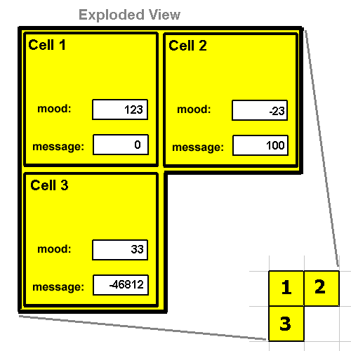

VOLVE 5.0
VOLVE 5.0
Sound Data Tab
Hearing or Sound occurs between cells that send messages. A sound is simply a 16-bit value which has been sent or recieved from another cell. This tab displays what the current cell is "hearing". Looking in all 8 direction surrounding the cell it displays what the sound related KFORTH instructions will return.

The cell is shown in the middle of the tab. Surrounding the cell are the results from listening along each of the 8 directions. Shown is the distance and the MOOD or MESSAGE register of the other cell.
Examples
Here's some KFORTH instructions and what they will return, assuming the data shown above.-21431 1 0 SAY ; send '-21431' along vector (1,0) |
The MOOD and MESSAGE registers of all the surrounding cells are shown on this tab. The combo box can be used to select between these two registers.
The Mood register is something that this cell sets and other cells can read.
The Message register is something other cells set and this cell will read.
More information about sound instructions here.